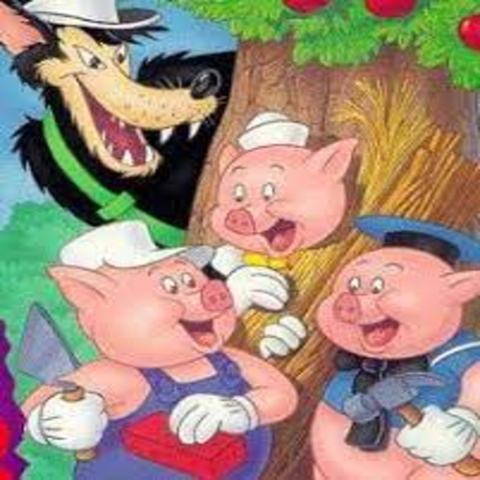

Presentacion
Soy Francisca Duarte y en esta ocasion voy a mostar como fue el proceso de la creacion del trabajo final de tecnologia multimedial de primer año, donde me toco hacer una aventura grafica que integre un mini juego.
Todo esto arranco en el trabajo practico N4, donde tuvimos que elegir un cuento, en mi caso elegi "Los tres ceditos" ya que es un cuento que leia de chica y que para mi tiene muchas opciones para poder hacer la aventura grafica. Una vez finalizado ese trabajo, le siguio el trabajo practico N5, en el cual tuvimos que hacer un mini juego con el mismo cuento, yo en mi caso decidi hacer un juego donde el lobo tenga que atrapar a los cerditos en un determinado tiempo.
Por ultimo, llego el trabajo practico final, en el cual yo decidi incorporar el mini juego luego de que los cerditos deciden hacer la casa de paja y el lobo logra destruirselas muy rapido. Luego de eso comienza el juego, donde la persona que este pasando la aventura grafica en ese momento va a tener que hacer de lobo e intentar agarrar a todos los cerditos para poder ganar.
